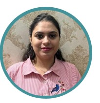

Ananya Sethi

Summary
Aspiring Business Analyst and Solution Engineer II with an MBA, bringing strong proficiency in AWS, Java, Frontend Development, Agile methodologies, and effective communication to enhance user experiences and deliver impactful solutions.
Education
- BTech Computer Science, Chitkara University | (2015-1019)
- Masters, Information Technology | (2022-2024)
Work Experience
-
Solution Implementation Consultan II
FICO, Bangalore (2022-2024)
- Extensive experience developing IVR systems for telecommunications and customer service applications.
- Skilled in developing, integrating, and optimizing IVR applications to streamline customer support processes and improve interaction efficiency
- Experienced IVR Developer with over 4 years of expertise in building and optimizing voice-based customer service solutions.
-
Solution Implementation Consultan I
FICO, Bangalore (2018-2022)
- Designed, tested, and debugged applications using programming languages such as C++, Java, MySQL, VXML etc
- Collaborated with cross-functional teams to deliver high-quality applications on time
- Passionate about developing scalable applications and leveraging cloud computing technologies
- Adept at troubleshooting complex code issues and optimizing performance
Skills
- Customer Service : ⭐️⭐️⭐️⭐️⭐️
- Organizational Skills: ⭐️⭐️⭐️⭐️
- Relationships with Client: ⭐️⭐️⭐️⭐️
- Buisness Analysis:: ⭐️⭐️⭐️
Awards and Certifications
- Project Management for Business Process Improvement – LinkedIn(May 2025)
- Embedded Systems Fundamentals – Udacity (Feb 2025)
- Zero Trust Security – Udacity (Feb 2022 – Apr 2022)
- Digital Project Management – Udacity (Oct 2021 – Dec 2021)
- Product Manager – Udacity (Sep 2022 – Dec 2022)
Achievements
- Received 10 Spot Awards for consistently delivering high-quality work
- Received the Kudos Award for exceptional project contributions
- Achieved consistent performance ratings of 4/5 and 5/5
Other
© Ananya Sethi. All rights reserved.